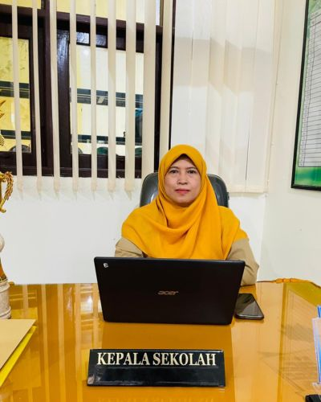
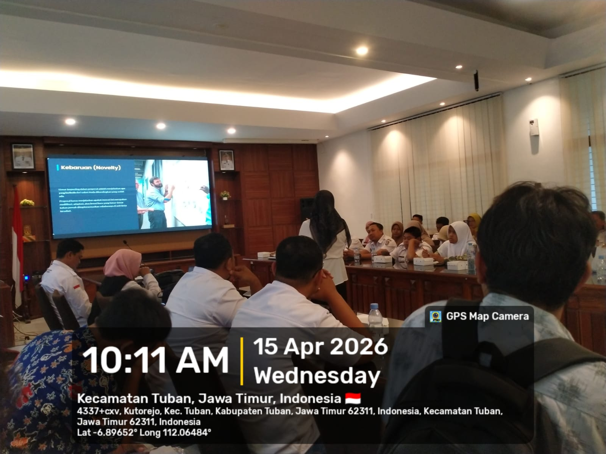
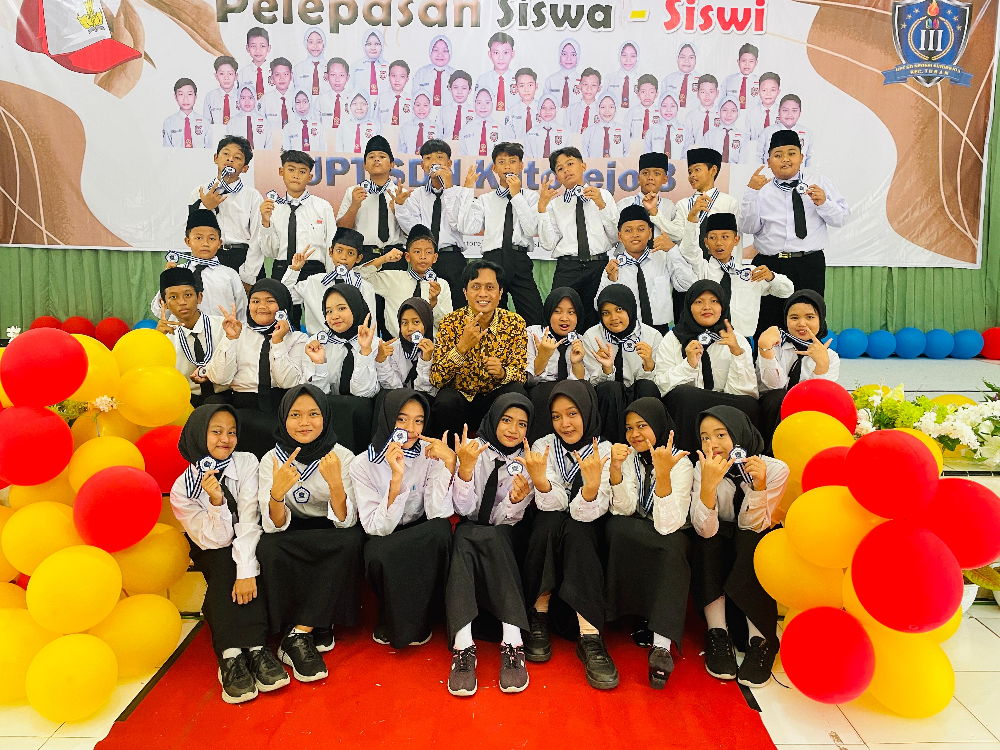
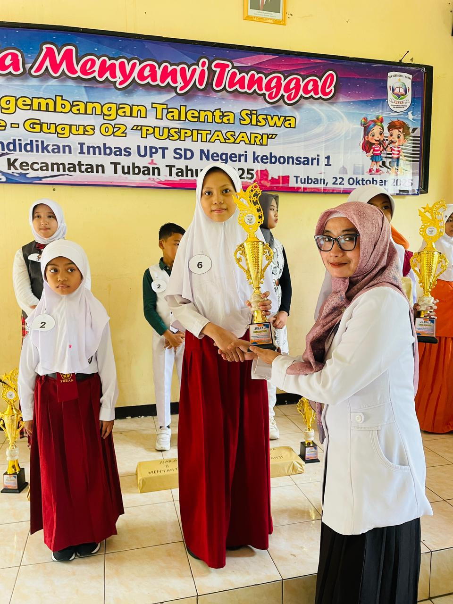
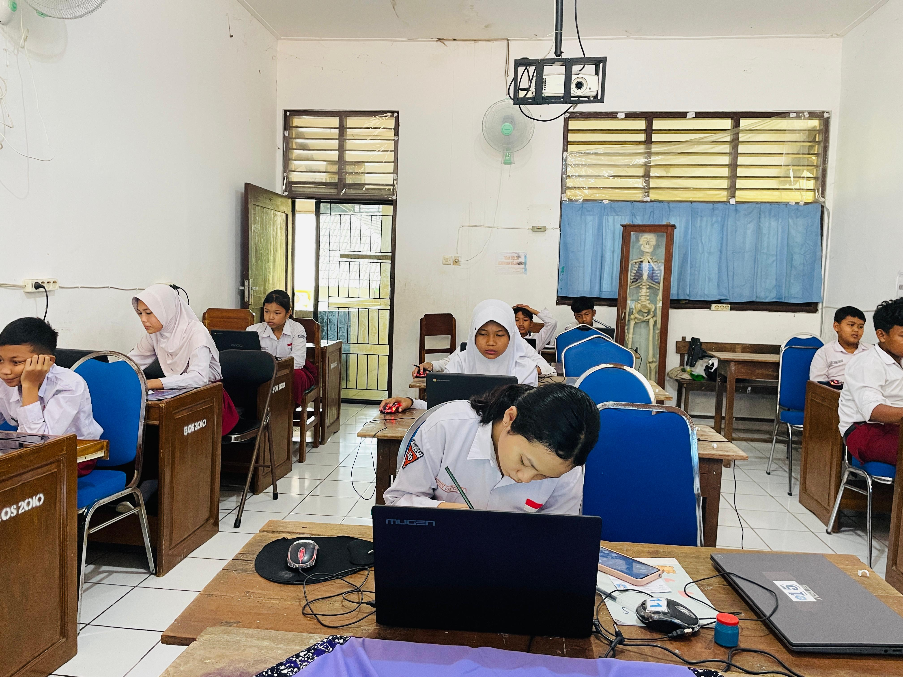

Selamat Datang di Portal Resmi UPT SDN Kutorejo 3 Tuban.
Mewujudkan generasi unggul yang beriman dan bertaqwa.

"Pendidikan bukan hanya tentang mengisi wadah, tapi tentang menyalakan api. Di SDN Kutorejo 3, kami berkomitmen untuk membimbing setiap siswa menemukan potensi terbaiknya melalui pendidikan yang inovatif dan berbasis karakter."
- Siti Ekta Budianti, S.Pd, M.Pd -Siswa Aktif
Guru Berpengalaman
Prestasi Nasional
Ruang Kelas
Ikuti perkembangan terbaru dan aktivitas menarik di sekolah kami.

Menggunakan teknologi PWA dan Gamifikasi, LaweKids siap kenalkan sejarah Tuban...
Baca Selengkapnya →
KegiatanAcara perpisahan yang penuh khidmat dan haru menyambut masa depan...
Baca Selengkapnya →
PrestasiSelamat kepada Ananda Ahmad atas prestasi gemilang yang diraih...
Baca Selengkapnya →
PengumumanDiharapkan seluruh siswa mempersiapkan diri untuk menempuh ujian...
Baca Selengkapnya →